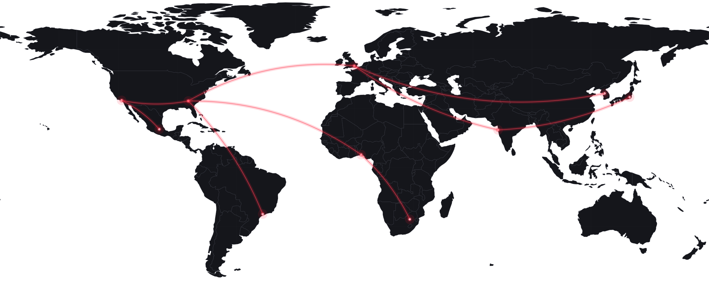

ARTIST INTELLIGENCE
Know who is rising
before everyone else.

One connected graph of artists, fans, scenes, content and cultural movement.

Know who is rising
before everyone else.
Understand what
audiences truly love.
Help fans find
meaningful artists.
Enable earlier,
better decisions.
Vision architecture: product direction, not a statement of current coverage or capability.